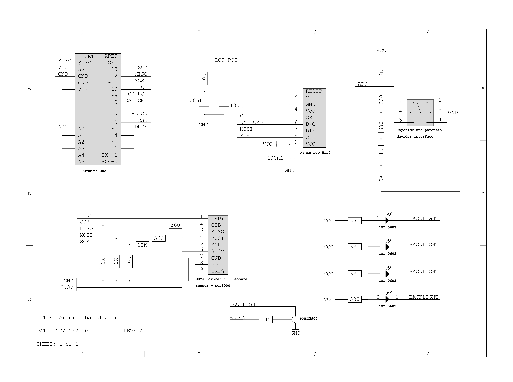
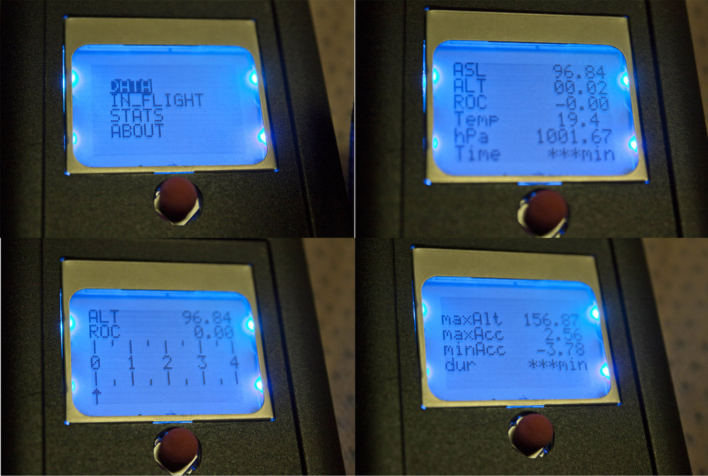

Variometer
A variometer or vario for short is an inflight instrument that is used aviation, it informs a pilot of the rate of change of accent and decent. This is particularly important to paragliding pilots where air conditions change rapidly affecting the flight behaviour of the glider.
Below is a brief documentation on how to build one. The vario is based on an Arduino, it takes a reading of the atmospheric pressure passes it to the Arduino. With this information it is possible to calculate the altitude from a given fixed point and taking 2 readings you can calculate the rate of change in altitude. This information is then displayed on an LCD screen.
Parts list:
Schematic diagram:
Code/files:
ttps://github.com/naineshp/Variometer
Outcome:
